نبض فضای سیاسی اجتماعی
به روایت حوزه علمیه خراسان
عرصههای رصد
↓بستههای تحلیلی
↓
اخبار و رویدادها، کنشگری مجازی، مدارس و افراد را در یک سامانهی واحد و بهروز دنبال میکنیم. هر عرصه با روش پایش مخصوص به خودش رصد میشود تا هیچ تحولی در فضای سیاسیاجتماعی از دید جریان دور نماند.
با نگاه جامعهشناسی سیاسی، رویدادها را از دل دادهها استخراج و تحلیل میکنیم. حاصل این تحلیل در قالب بستهی تحلیلی جریان، هر شماره در اختیار مخاطب قرار میگیرد.
با سطحبندی دقیق نقشها، اطلاعات حساس فقط در اختیار افراد مجاز قرار میگیرد. مدیران و بینندگان هرکدام دسترسی متناسب با نیاز خود را دارند، بدون افشای دادههای حساس.
اخبار و رویدادها
کنشگری مجازی
برنامه مدارس
یادداشتها
جریان این چهار عرصه را بهصورت جداگانه رصد و پایش میکند: اخبار و رویدادهای خبرگزاریها، کنشگری فضای مجازی، برنامههای آموزشی مدارس و یادداشتهای مربوط به افراد و مجموعههای تأثیرگذار. هر عرصه با منبع داده و روش پایش مخصوص به خودش دنبال میشود.

بسته تحلیلی جریان
بسته تحلیلی جریان، خلاصهای تحلیلی، دقیق و چندلایه از تحولات سیاسیاجتماعی است که سعی دارد نگاهی جامع را در اختیار مخاطب قرار دهد. این بسته شامل ۱۰ بخش است.
خط خبری
تحلیل اخبار روز
مهمترین اخبار
نگاه جامعهشناسی سیاسی
اصل ماجرا
تحلیل سازمانها
یادداشت طلاب
خارج از دید
نبض افکار
تحلیل اندیشگدهها
اطلاع از انتشار بسته تحلیلی جریان
شماره موبایل خود را ثبت کنید تا هر وقت شمارهی جدید «بسته تحلیلی جریان» منتشر شد، پیامک اطلاعرسانی برایتان ارسال شود.
برای بهتر شدن بستههای جریان به ما کمک کنید
خلاصهی هوشمند اخبار مهم و موضوعات پرتکرار ۶ ساعت اخیر، تولیدشده با هوش مصنوعی.
یادداشتها و مطالب کانالهای معرفیشده بهعنوان چهرهی سیاسی.
پستهای منتشرشدهی کانالهای کنشگر فضای مجازی، قابلفیلتر بر اساس کانال، دسته و زمان.
شمارههای زیر از فرم «اطلاع از انتشار» در صفحهی ورود ثبت شدهاند. هر وقت شمارهی جدید منتشر شد، لیست را خروجی بگیرید و از سامانهی پیامکی خودتان ارسال کنید؛ بعد از ارسال، دکمهی «علامتگذاری» را بزنید تا خروجی بعدی فقط شمارههای جدید را نشان دهد.
در حال بارگذاری…
منابع
مدیریت منابعکانالها و سایتهایی که سامانه از آنها مطلب جمع میکند، و محل نمایش هرکدام در سایت
با کلیک روی هر منبع، مشخصات و بخشهایی از سایت که در آن نمایش داده میشود را ویرایش کنید.
برچسبهای منابع
موضوع منابعدر فیلتر «دستهبندی» و ستون «موضوع» جدول کنشگران
منطقههای جغرافیاییدر فیلتر «منطقه» تبهای اخبار
گروههای چهرهها و سازمانهاگروهبندی گالری لوگوها در بخش «یادداشتها»
گروهها (مثل حزب ۱ / حزب ۲) برای هر تب جداگانه تعریف میشوند. عضویت هر منبع در گروهها از پنجرهی ویرایش همان منبع تنظیم میشود و هر منبع میتواند عضو چند گروه باشد.
اخبار
میانبرهای جستوجوی وبسایتهادکمههای جستوجوی آماده در تب «وبسایتها»
هر میانبر یک نام و چند کلیدواژه (جدا با ویرگول) دارد. در تب «وبسایتها»، با کلیک روی میانبر، مطالبی نمایش داده میشوند که دستکم یکی از کلیدواژهها را در عنوان یا متن داشته باشند.
پروندههای موضوعیموضوعات تب «پروندههای موضوعی»
موضوعات موقت که هر چند روز یکبار عوض میشوند. کلیدواژههای هر موضوع (جدا با ویرگول) هر ۲ ساعت با کلیدواژههای هوش مصنوعی مطالب تازه تطبیق داده میشوند. فقط موضوعات فعال به بیننده نمایش داده میشوند؛ غیرفعالکردن یک موضوع، مطالبش را حذف نمیکند.